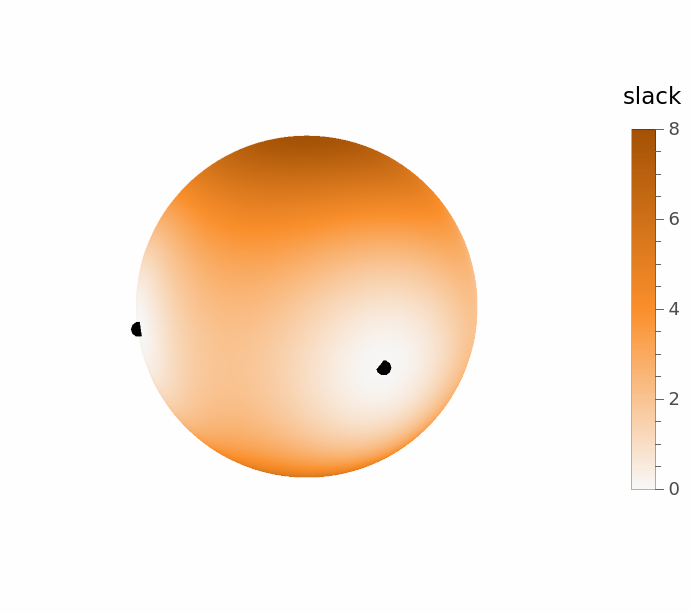
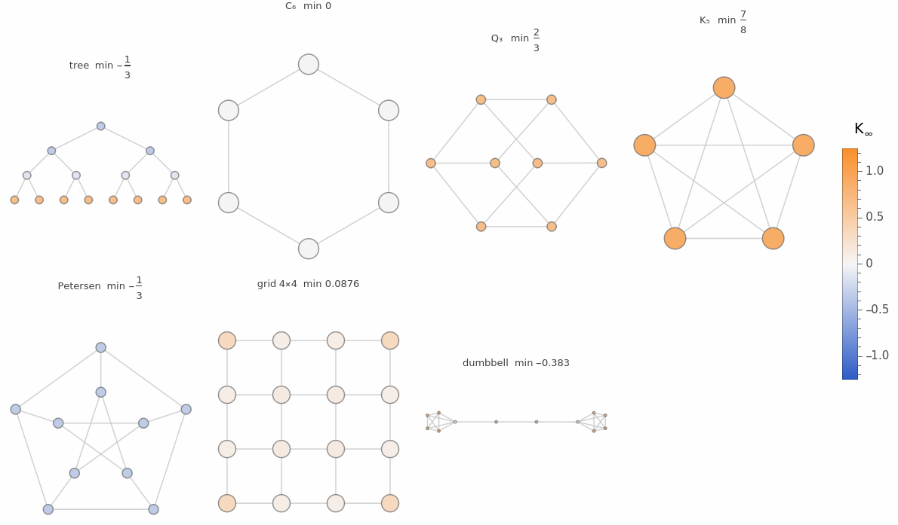
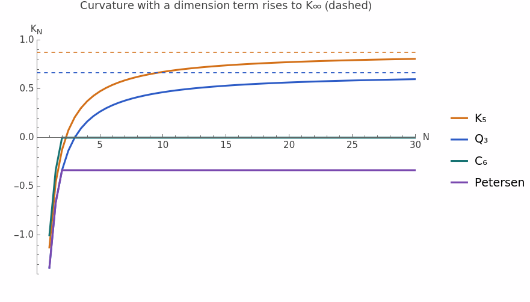

23 November 2026 · Computational Classnotes · Curvature from the
Laplacian, write-up 9
Ricci curvature is what is left over in Bochner’s formula: Γ₂(f) =
|Hess f|² + Ric(∇f, ∇f). Bakry and Émery noticed that both sides can be
written with the Laplacian alone, through the carré du champ Γ and its
iterate Γ₂. So the inequality Γ₂ ≥ (1/N)(Δf)² + KΓ makes sense wherever
there is a Laplacian, including on a graph, and the best K is a
curvature. On the round sphere it recovers Ric = 1 in dimension 2, and
on graphs it is a small, exact eigenvalue problem. This write-up
explains each part; the notebook
notebooks/series/09-Bakry-Emery.nb proves each one on
examples, with the same section numbers.
Scope and conventions
Laplacian. Δf(v) = (mean of f over the neighbours
of v) − f(v), the random-walk normalisation used throughout the
series.
Γ-calculus. Γ(f, g) = ½(Δ(fg) − fΔg − gΔf) and
Γ₂(f) = ½ΔΓ(f) − Γ(f, Δf). On a graph, Γ(f)(v) = ½ mean (f(w) − f(v))²
over the neighbours w.
Curvature.
is the largest K with Γ₂(f)(x) ≥ (1/N)(Δf(x))² + K Γ(f)(x) for all f;
drops the dimension term.
Numbering. Sections 2–9 here match notebook
Sections 2–9; notebook Section 1 is the toolkit. Every number quoted
below was returned by the Wolfram kernel.
Companion. The Ollivier write-up (07) uses the same
graphs, so the two curvatures can be compared (§8).
On the unit sphere the Bochner inequality Γ₂ ≥ Γ + (Δg)²/2
holds everywhere, with equality only at four points for this
g.

3D: drag to rotate
Fig. 1
Fig. 1. The slack Γ₂ − Γ − (Δg)²/2 of CD(1, 2) on
the unit sphere for g = z + (x² − y²). It is zero only at the four
equator points marked in black, and largest, 8, at the poles (§2). In
the HTML version the sphere can be rotated.
2. Bochner’s
formula, written with the Laplacian
On a Riemannian manifold, ½Δ|∇f|² = ⟨∇f, ∇Δf⟩ + |Hess f|² + Ric(∇f,
∇f). With Γ(f) = |∇f|² and Γ₂(f) = ½ΔΓ(f) − Γ(f, Δf) this reads
On the unit sphere S², Ric = 1, so Γ₂ − Γ = |Hess f|². In dimension
2, |Hess f|² ≥ (Δf)²/2, because the trace of a 2 × 2 symmetric matrix
squared is at most twice the sum of its squared entries. So
Equality needs a Hessian that is a multiple of the metric. The height
z = cos θ is the first eigenfunction (Δz = −2z) and attains it
everywhere: Γ₂(z) = 1 + z², Γ(z) = 1 − z² and (Δz)²/2 = 2z². For g = z +
(x² − y²), mixing the first two eigenspaces, the slack is
which vanishes only where sin θ = 1 and cos 4φ = −1 (Fig. 1).
Checked (notebook §2): Γ₂ − Γ − |Hess F|² simplifies
to 0 for an arbitrary F(θ, φ); for z the slack is exactly 0; for g the
slack equals the formula above, ranges over [0, 8], and is 1 + cos 4φ on
the equator.
3. Definition on graphs
A graph has no Hessian and no Ricci tensor, but it has a Laplacian,
so Γ and Γ₂ are defined. Bakry–Émery curvature imposes the Bochner
inequality directly:
Γ(f)(x) depends on f on the 1-ball of x and Γ₂(f)(x) on the 2-ball.
Both are quadratic forms in those values, and constants drop out. So
is a finite problem. Minimise first over the values at distance 2 (a
Schur complement); then
is the smallest generalised eigenvalue of the reduced Γ₂ − (Δf)²/N
against Γ on the neighbours. This is the reformulation of Cushing,
Kamtue, Liu and Peyerimhoff, and the notebook computes it exactly.
One edge K₂. Put f(x) = 0 and f(y) = t. Then Δf(x) =
t and Δf(y) = −t. Γ(f) = t²/2 at both ends, so ΔΓ(f)(x) = 0. And Γ(f,
Δf)(x) = ½(t − 0)(−t − t) = −t². Hence
With the dimension term, t² − t²/N ≥ K t²/2 gives
= 2 − 2/N: 0, 1, 3/2, 9/5 for N = 1, 2, 4, 10.
Long cycles are flat. On Cₙ with n ≥ 5, let f be the
position along the path through x, with values −2, −1, 0, 1, 2 on the
2-ball. Then Δf = 0 at x and its neighbours. Γ(f) = ½ at every vertex,
so ΔΓ = 0. Hence Γ₂(f)(x) = 0 while Γ(f)(x) = ½, and
≤ 0. The kernel gives exactly 0; C₃ = K₃ gives 5/4 and C₄ = Q₂ gives
1.
Complete graphs. On Kₙ every other vertex is a
neighbour, so there is no 2-ball part, and the same calculation
gives
Checked (notebook §4):
= 2 and
= 0, 1, 3/2, 9/5 for N = 1, 2, 4, 10; Cₙ gives 5/4, 1, 0, 0, 0, 0, 0 for
n = 3 … 9; Kₙ matches (n + 2)/(2(n − 1)) for n = 2 … 8.
5. Families and a gallery
The hypercube
has
= 2/d at every vertex. The binary tree is negative at the root and
branch vertices and positive at the leaves. On the dumbbell the two
bridge vertices are the most negative, and the vertex where a clique
meets the bridge is just below zero.

Fig. 2
Fig. 2. Seven graphs with every vertex coloured by
,
on the same blue–white–orange scale as the Ollivier gallery. Complete
graphs and cubes are positive and long cycles flat; tree branch points,
Petersen and the dumbbell’s bridge are negative.
The dimension term can only lower the curvature, so
increases with N and tends to
.
Cushing, Liu and Peyerimhoff study this curvature function N ↦
systematically.

Fig. 3
Fig. 3.
against N on four vertex-transitive graphs. K₅ and Q₃ only approach
their
(7/8 and 2/3, dashed). C₆ and Petersen reach theirs (0 and −1/3) already
at N = 2: there the function that attains
has Δf(x) = 0, so the dimension term costs nothing.
Lin and Yau proved a universal lower bound in dimension 2: every
graph with maximum degree D satisfies
Checked (notebook §6): the four curves increase in
N;
≥ 1/D − 1 holds at every vertex of all seven graphs of Fig. 2.
7. What a lower bound buys
Lichnerowicz. If every vertex satisfies CD(K, N)
with K > 0, the first non-zero eigenvalue of −Δ satisfies
Bonnet–Myers. Liu, Münch and Peyerimhoff prove diam
≤ 2
/K
under CD(K, ∞) for the unnormalised Laplacian, sharp on hypercubes. For
a d-regular graph the normalised Laplacian here is 1/d times the
unnormalised one, so K scales by 1/d and the bound reads
Graph
λ₁
best NK/(N − 1), N ≤ 50
diam
2/
K₃
1.5
5/4
1.235
1
8/5
K₅
1.25
7/8
0.852
1
16/7
Q₃
0.667
2/3
0.639
3
3
Q₄
0.5
1/2
0.469
4
4
Checked (notebook §7): λ₁ ≥
in every row, with equality on Q₃ and Q₄. On these graphs the N = ∞
bound is the strongest, since the best finite-N bound is lower. diam ≤
2/
in every row, with equality on Q₂, Q₃ and Q₄.
8. Bakry–Émery and
Ollivier side by side
Both curvatures copy one property of Ricci curvature: Bakry–Émery the
Bochner formula, Ollivier the transport of small balls. On these graphs
they agree in sign but not in size.
Graph
(min)
(min, write-up 07)
K₅
7/8
5/4
Q₃
2/3
2/3
C₆
0
0
Petersen
−1/3
0
4×4 grid
0.0876
0
Checked (notebook §8): Q₃ gives 2/3 for both; on K₅
Ollivier is larger; on Petersen Bakry–Émery is negative while Lin–Lu–Yau
is 0; on the grid Bakry–Émery is slightly positive at every vertex while
Lin–Lu–Yau has flat edges.
9. Exercises
Show by hand that
= 5/4.
Derive
= 2 − 2/N from the K₂ calculation in §4.
Find f on C₄ with Γ₂(f) = Γ(f) at a vertex, so
≤ 1.
Prove
≤ 2/d with f = one coordinate.
On S², show that the slack of g is 8 − 8 sin²θ + sin⁴θ (1 + cos 4φ)
and find its four zeros.
Checked (notebook §9):
= 5/4,
= 1, and the slack is 0 at θ = π/2, φ = π/4.
Verified results
Graph
(min over vertices)
exact form
λ₁
diam
K₂
2
2
—
1
K₅
0.875
7/8
1.25
1
Q₃
0.667
2/3
0.667
3
C₆
0
0
0.5
3
Petersen
−0.333
−1/3
0.667
2
4×4 grid
0.0876
algebraic
—
6
Binary tree (15 vertices)
−0.333
−1/3
0.057
6
Dumbbell
−0.383
(2 − √34)/10
0.029
5
is exact in every row. Where it is positive, the Lichnerowicz bound λ₁ ≥
holds, with equality on Q₃. The λ₁ values for C₆, Petersen, the tree and
the dumbbell are from write-up 07.
References
Every item below was opened (abstract or full text) on 23 November
2026 unless marked otherwise; the notes say what each contributes.
1. The Γ-calculus and curvature-dimension
D. Bakry, M. Émery, Diffusions hypercontractives, Séminaire
de probabilités XIX, Lecture Notes in Math. 1123, Springer (1985),
177–206. doi:10.1007/BFb0075847, Numdam. The
Γ₂ criterion: a strong positivity of Γ₂ gives hypercontractivity.
D. Bakry, I. Gentil, M. Ledoux, Analysis and Geometry of Markov
Diffusion Operators, Grundlehren der mathematischen Wissenschaften
348, Springer (2014). doi:10.1007/978-3-319-00227-9.
The standard reference for Γ, Γ₂ and CD(K, N), with Poincaré, Sobolev
and log-Sobolev consequences.
D. Bakry, M. Ledoux, Sobolev inequalities and Myers’s diameter
theorem for an abstract Markov generator, Duke Math. J. 85 (1996),
no. 1, 253–270. Cited from the reference list of Liu–Münch–Peyerimhoff;
not opened.
2. From diffusions to graphs
M. Schmuckenschläger, Curvature of nonlocal Markov
generators, in Convex Geometric Analysis, MSRI
Publications 34 (1998), from p. 189. PDF.
Extends the curvature-dimension condition to nonlocal generators, which
gives a curvature for graphs, local to the 2-ball.
Y. Lin, S.-T. Yau, Ricci curvature and eigenvalue estimate on
locally finite graphs, Math. Res. Lett. 17 (2010), no. 2, 343–356.
doi:10.4310/MRL.2010.v17.n2.a13.
CD on graphs, the universal bound K₂ ≥ 1/D − 1 (§6), and eigenvalue
estimates.
Y. Lin, S.-T. Yau, A brief review on geometry and spectrum of
graphs. arXiv:1204.3168. States Γ₂ ≥
½(Δf)² + (1/d − 1)Γ in the normalisation used here.
3. Curvature functions and computation
D. Cushing, S. Liu, N. Peyerimhoff, Bakry–Émery curvature
functions on graphs, Canad. J. Math. 72 (2020), no. 1, 89–143. doi:10.4153/CJM-2018-015-4,
arXiv:1606.01496. The
function N ↦
(§6), products, Cayley and strongly regular graphs.
D. Cushing, S. Kamtue, S. Liu, N. Peyerimhoff, Bakry–Émery
curvature on graphs as an eigenvalue problem, Calc. Var. Partial
Differential Equations 61 (2022), 62. arXiv:2102.08687. The
Schur-complement eigenvalue formulation used in the notebook (§3).
D. Cushing, R. Kangaslampi, V. Lipiäinen, S. Liu, G. W. Stagg,
The Graph Curvature Calculator and the curvatures of cubic
graphs, Experiment. Math. 31 (2022), no. 2, 583–595. doi:10.1080/10586458.2019.1660740,
arXiv:1712.03033.
Classifies the non-negatively curved cubic graphs (prisms and Möbius
ladders) for both Ollivier and Bakry–Émery; the online Graph Curvature
Calculator gives an independent check of the values here.
4. Consequences: spectrum, diameter, heat
kernels
F. Bauer, F. Chung, Y. Lin, Y. Liu, Curvature aspects of
graphs, Proc. Amer. Math. Soc. 145 (2017), no. 5, 2033–2042. doi:10.1090/proc/13145.
Lichnerowicz-type eigenvalue bounds under CD (§7).
S. Liu, F. Münch, N. Peyerimhoff, Bakry–Émery curvature and
diameter bounds on graphs, Calc. Var. Partial Differential
Equations 57 (2018), no. 2, 67. doi:10.1007/s00526-018-1334-x,
arXiv:1608.07778.
Discrete Bonnet–Myers, diam ≤ 2
/K,
sharp on hypercubes (§7).
S. Liu, F. Münch, N. Peyerimhoff, C. Rose, Distance bounds for
graphs with some negative Bakry–Émery curvature. arXiv:1705.08119. Diameter
bounds when the curvature is positive outside an exceptional set.
F. Bauer, P. Horn, Y. Lin, G. Lippner, D. Mangoubi, S.-T. Yau,
Li–Yau inequality on graphs, J. Differential Geom. 99 (2015),
359–405. Cited from a reference list; not opened. The exponential
curvature-dimension condition CDE.
P. Horn, Y. Lin, S. Liu, S.-T. Yau, Volume doubling, Poincaré
inequality and Gaussian heat kernel estimate for non-negatively curved
graphs, J. Reine Angew. Math. 757 (2019), 89–130. Cited from a
reference list; not opened.
B. Hua, Y. Lin, Stochastic completeness for graphs with
curvature dimension conditions, Adv. Math. 306 (2017), 279–302.
Cited from a reference list; not opened.
F. Münch, Remarks on curvature dimension conditions on
graphs, Calc. Var. Partial Differential Equations 56 (2017), no. 1,
11. Cited from a reference list; not opened.
5. Related curvatures
J. Jost, S. Liu, Ollivier’s Ricci curvature, local clustering
and curvature-dimension inequalities on graphs, Discrete Comput.
Geom. 51 (2014), no. 2, 300–322. doi:10.1007/s00454-013-9558-1.
Relates Ollivier curvature to curvature-dimension inequalities
(§8).
B. Klartag, G. Kozma, P. Ralli, P. Tetali, Discrete curvature
and abelian groups, Canad. J. Math. 68 (2016), no. 3, 655–674.
Cited from a reference list; not opened. Bakry–Émery curvature of Cayley
graphs of abelian groups.
M. Erbar, J. Maas, Ricci curvature of finite Markov chains via
convexity of the entropy, Arch. Ration. Mech. Anal. (2012). arXiv:1111.2687. The entropic
curvature, a third discrete Ricci curvature.
Y. Ollivier, Ricci curvature of Markov chains on metric
spaces, J. Funct. Anal. 256 (2009), 810–864. arXiv:math/0701886. The
transport curvature of write-up 07.